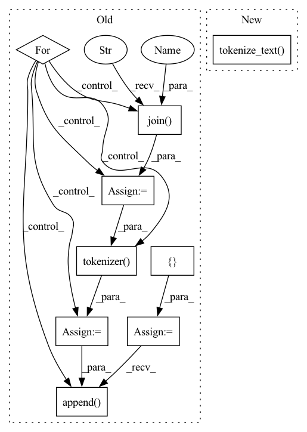

Pattern ID :28597

Before Change
self.loss = nn.CrossEntropyLoss(ignore_index=self.padding_token_idx, reduction="none")
def generate(self, batch_data, eval_data):
generate_corpus = []
source_text = batch_data["source_text"]
for text in source_text:
text = " ".join(text)
encoding_dict = self.tokenizer(text, return_tensors="pt")
input_ids = encoding_dict["input_ids"].to(self.device)
output_ids = self.model.generate(input_ids, max_length=self.max_target_length, early_stopping=True)
generate_text = self.tokenizer.decode(output_ids[0], skip_special_tokens=True)
generate_corpus.append(generate_text.lower().split())
return generate_corpus
def forward(self, corpus, epoch_idx=-1):
After Change
def generate(self, batch_data, eval_data):
source_text = batch_data["source_text"]
input_ids, attn_masks = self.tokenize_text(source_text)
sample_outputs = self.model.generate(
input_ids, attention_mask=attn_masks, num_beams=5, max_length=self.max_target_length, early_stopping=True
)
In pattern: SUPERPATTERN
Frequency: 4
Non-data size: 9
Instances
Fragment ID: 84461128
Project Name: rucaibox/textbox
Commit Name: 47a1a3dc1eee71dd585124dbf1786e2508d34561
Time: 2021-04-15
Author: 1020139164@qq.com
File Name: textbox/model/Seq2Seq/prophetnet.py
M Class Name: ProphetNet
N Class Name: ProphetNet
M Method Name: generate(3)
N Method Name: generate(3)
M Parent Class: Seq2SeqGenerator
N Parent Class: Seq2SeqGenerator
M File Name: textbox/model/Seq2Seq/prophetnet.py
N File Name: textbox/model/Seq2Seq/prophetnet.py
M Start Line: 38
M End Line: 50
N Start Line: 38
N End Line: 45
'>
Before Change
input_ids = torch.cat(input_ids, dim=0).to(self.device)
encoder_attn_masks = torch.cat(encoder_attn_masks, dim=0).to(self.device)
target_ids = []
decoder_attn_masks = []
for text in target_text:
sentence = " ".join(text)
decoding_dict = self.tokenizer(
sentence, max_length=self.max_target_length, padding="max_length", truncation=True, return_tensors="pt"
)
target_ids.append(decoding_dict["input_ids"])
decoder_attn_masks.append(decoding_dict["attention_mask"])
target_ids = torch.cat(target_ids, dim=0).to(self.device)
decoder_attn_masks = torch.cat(decoder_attn_masks, dim=0).to(self.device)
After Change
source_text = corpus["source_text"]
target_text = corpus["target_text"]
input_ids, attn_masks = self.tokenize_text(source_text)
target_ids, decoder_attn_masks = self.tokenize_text(target_text)
decoder_input_ids = target_ids[:, :-1].contiguous()
decoder_attn_masks = decoder_attn_masks[:, :-1].contiguous()
'>
Fragment ID: 84461144
Project Name: rucaibox/textbox
Commit Name: 47a1a3dc1eee71dd585124dbf1786e2508d34561
Time: 2021-04-15
Author: 1020139164@qq.com
File Name: textbox/model/Seq2Seq/bert2bert.py
M Class Name: BERT2BERT
N Class Name: BERT2BERT
M Method Name: forward(3)
N Method Name: forward(3)
M Parent Class: Seq2SeqGenerator
N Parent Class: Seq2SeqGenerator
M File Name: textbox/model/Seq2Seq/bert2bert.py
N File Name: textbox/model/Seq2Seq/bert2bert.py
M Start Line: 78
M End Line: 127
N Start Line: 86
N End Line: 109
'>
Before Change
attn_masks = torch.cat(attn_masks, dim=0).to(self.device)
target_ids = []
decoder_attn_masks = []
for text in target_text:
sentence = " ".join(text)
decoding_dict = self.tokenizer(
sentence, max_length=self.max_target_length, padding="max_length", truncation=True, return_tensors="pt"
)
target_ids.append(decoding_dict["input_ids"])
decoder_attn_masks.append(decoding_dict["attention_mask"])
target_ids = torch.cat(target_ids, dim=0).to(self.device)
decoder_attn_masks = torch.cat(decoder_attn_masks, dim=0).to(self.device)
decoder_input_ids = target_ids[:, :-1].contiguous()
After Change
source_text = corpus["source_text"]
target_text = corpus["target_text"]
input_ids, attn_masks = self.tokenize_text(source_text)
target_ids, decoder_attn_masks = self.tokenize_text(target_text)
decoder_input_ids = target_ids[:, :-1].contiguous()
decoder_attn_masks = decoder_attn_masks[:, :-1].contiguous()
'>
Fragment ID: 84461117
Project Name: rucaibox/textbox
Commit Name: 47a1a3dc1eee71dd585124dbf1786e2508d34561
Time: 2021-04-15
Author: 1020139164@qq.com
File Name: textbox/model/Seq2Seq/bart.py
M Class Name: BART
N Class Name: BART
M Method Name: forward(3)
N Method Name: forward(3)
M Parent Class: Seq2SeqGenerator
N Parent Class: Seq2SeqGenerator
M File Name: textbox/model/Seq2Seq/bart.py
N File Name: textbox/model/Seq2Seq/bart.py
M Start Line: 57
M End Line: 101
N Start Line: 63
N End Line: 86
'>
Before Change
self.loss = nn.CrossEntropyLoss(ignore_index=self.padding_token_idx, reduction="none")
def generate(self, batch_data, eval_dataloader):
generate_corpus = []
source_text = batch_data["source_text"]
for text in source_text:
sentence = " ".join(text)
encoding_dict = self.tokenizer(sentence, return_tensors="pt")
input_ids = encoding_dict["input_ids"].to(self.device)
sample_outputs = self.decoder.generate(
input_ids, num_beams=5, max_length=self.max_target_length, early_stopping=True
)
generated_text = self.tokenizer.decode(sample_outputs[0], skip_special_tokens=True)
generate_corpus.append(generated_text.lower().split())
return generate_corpus
def forward(self, corpus, epoch_idx=-1):
source_text = corpus["source_text"]
After Change
def generate(self, batch_data, eval_data):
source_text = batch_data["source_text"]
input_ids, attn_masks = self.tokenize_text(source_text)
sample_outputs = self.model.generate(
input_ids, attention_mask=attn_masks, num_beams=5, max_length=self.max_target_length, early_stopping=True
)
'>
Fragment ID: 84461137
Project Name: rucaibox/textbox
Commit Name: 47a1a3dc1eee71dd585124dbf1786e2508d34561
Time: 2021-04-15
Author: 1020139164@qq.com
File Name: textbox/model/Seq2Seq/bart.py
M Class Name: BART
N Class Name: BART
M Method Name: generate(3)
N Method Name: generate(3)
M Parent Class: Seq2SeqGenerator
N Parent Class: Seq2SeqGenerator
M File Name: textbox/model/Seq2Seq/bart.py
N File Name: textbox/model/Seq2Seq/bart.py
M Start Line: 43
M End Line: 54
N Start Line: 41
N End Line: 48